nnActivationExplorer = {
const container = html`<div class="nn-activation-explorer" style="max-width:1260px;margin:0 auto;font-family:system-ui,sans-serif;color:#232754;">
<div style="display:flex;flex-wrap:wrap;align-items:center;justify-content:center;gap:16px 34px;font-size:20px;margin:0 0 10px;">
<label style="display:flex;align-items:center;gap:10px;">Activation
<select class="nn-activation-choice" style="font:inherit;color:#642b80;background:#faf5ff;border:1px solid #bba4c9;border-radius:6px;padding:5px 10px;">
<option value="relu">ReLU</option><option value="sigmoid">Sigmoid</option><option value="tanh">tanh</option>
</select>
</label>
<label style="display:flex;align-items:center;gap:10px;color:#0f4494;">Weight w
<input class="nn-activation-weight" type="range" min="-2" max="2" step="0.1" value="1" style="width:170px;accent-color:#0f4494;">
<output class="nn-activation-weight-value" style="font-variant-numeric:tabular-nums;min-width:46px;">1.0</output>
</label>
<label style="display:flex;align-items:center;gap:10px;color:#be2832;">Intercept b
<input class="nn-activation-intercept" type="range" min="-2" max="2" step="0.1" value="0" style="width:170px;accent-color:#be2832;">
<output class="nn-activation-intercept-value" style="font-variant-numeric:tabular-nums;min-width:46px;">0.0</output>
</label>
</div>
<svg viewBox="0 0 1200 340" role="img" aria-label="A neuron with an input weight, a constant input for its intercept, and a selectable activation, beside its graph" style="display:block;width:100%;max-height:340px;overflow:visible;">
<title>A neuron and the function it represents</title>
<desc class="nn-activation-description"></desc>
<rect x="4" y="7" width="490" height="308" rx="14" fill="#f8fafc" stroke="#e2e8f0"/>
<text x="250" y="43" text-anchor="middle" font-size="22" font-weight="600">Follow one input</text>
<g fill="none" stroke-width="3">
<path d="M 75 207 H 170" stroke="#0f4494"/>
<path d="M 160 201 L 170 207 L 160 213" stroke="#0f4494"/>
<path d="M 197 113 V 178" stroke="#be2832" stroke-dasharray="6 5"/>
<path d="M 191 168 L 197 178 L 203 168" stroke="#be2832"/>
<path d="M 224 207 H 292" stroke="#64748b"/>
<path d="M 282 201 L 292 207 L 282 213" stroke="#64748b"/>
<path d="M 364 207 H 425" stroke="#642b80"/>
<path d="M 415 201 L 425 207 L 415 213" stroke="#642b80"/>
</g>
<g text-anchor="middle" font-size="23">
<circle cx="51" cy="207" r="24" fill="#e8f0fc" stroke="#0f4494" stroke-width="2"/>
<text x="51" y="215" fill="#0f4494">x</text>
<polygon points="197,65 222,90 197,115 172,90" fill="#fff1f2" stroke="#be2832" stroke-width="2"/>
<text x="197" y="98" fill="#be2832">1</text>
<circle cx="197" cy="207" r="27" fill="white" stroke="#475569" stroke-width="2"/>
<text x="197" y="215" fill="#475569">Σ</text>
<text class="nn-activation-weight-label" x="120" y="188" fill="#0f4494">w = 1.0</text>
<text class="nn-activation-intercept-label" x="213" y="150" text-anchor="start" fill="#be2832">b = 0.0</text>
<text x="197" y="267" fill="#475569" font-size="19">affine sum</text>
<text x="450" y="215" fill="#642b80">h(x)</text>
</g>
<g class="nn-activation-node"></g>
<text class="nn-activation-node-label" x="328" y="267" text-anchor="middle" font-size="20" font-weight="600" fill="#642b80"></text>
<text x="250" y="300" text-anchor="middle" fill="#64748b" font-size="17">The intercept multiplies a constant input 1.</text>
<rect x="566" y="32" width="604" height="247" rx="7" fill="#faf8fc"/>
<g class="nn-activation-grid"></g>
<path class="nn-activation-reference" fill="none" stroke="#94a3b8" stroke-width="2.5" stroke-dasharray="7 6"/>
<path class="nn-activation-curve" fill="none" stroke="#642b80" stroke-width="4" stroke-linejoin="round"/>
<text x="579" y="23" fill="#642b80" font-size="21">h(x)</text>
<text x="1183" y="302" fill="#475569" font-size="20">x</text>
<path d="M 639 328 H 679" stroke="#94a3b8" stroke-width="2.5" stroke-dasharray="7 6"/>
<text x="690" y="335" fill="#64748b" font-size="18">activation(x)</text>
<path d="M 881 328 H 921" stroke="#642b80" stroke-width="4"/>
<text x="932" y="335" fill="#642b80" font-size="18">activation(wx + b)</text>
</svg>
<p class="nn-activation-observation" aria-live="polite" style="font-size:19px;text-align:center;margin:8px 0 0;min-height:26px;"></p>
</div>`;
const svgNS = 'http://www.w3.org/2000/svg';
const select = container.querySelector('.nn-activation-choice');
const weight = container.querySelector('.nn-activation-weight');
const intercept = container.querySelector('.nn-activation-intercept');
const activations = {
relu: {name:'ReLU', fn:z=>Math.max(0,z), bounds:[-0.5,8.5], ticks:[0,2,4,6,8],
outline:['rect',{x:292,y:171,width:72,height:72}],
glyph:'M 305 227 L 327 227 L 351 187', shape:'square'},
sigmoid: {name:'Sigmoid', fn:z=>1/(1+Math.exp(-z)), bounds:[-0.12,1.12], ticks:[0,0.5,1],
outline:['rect',{x:292,y:171,width:72,height:72,rx:22}],
glyph:'M 303 226 C 326 226 323 225 328 207 S 334 187 353 187', shape:'rounded rectangle'},
tanh: {name:'tanh', fn:z=>Math.tanh(z), bounds:[-1.2,1.2], ticks:[-1,0,1],
outline:['polygon',{points:'310,171 346,171 364,207 346,243 310,243 292,207'}],
glyph:'M 305 226 C 324 226 321 224 328 207 S 333 188 351 188', shape:'hexagon'}
};
function svgElement(parent,tag,attrs,label) {
const node = document.createElementNS(svgNS,tag);
for (const [key,value] of Object.entries(attrs)) node.setAttribute(key,String(value));
if (label !== undefined) node.textContent=label;
parent.append(node);
return node;
}
function update() {
const activation = activations[select.value];
const w = weight.valueAsNumber;
const b = intercept.valueAsNumber;
const format = n => (Math.abs(n)<0.05 ? 0 : n).toFixed(1);
container.querySelector('.nn-activation-weight-value').textContent = format(w);
container.querySelector('.nn-activation-intercept-value').textContent = format(b);
container.querySelector('.nn-activation-weight-label').textContent = `w = ${format(w)}`;
container.querySelector('.nn-activation-intercept-label').textContent = `b = ${format(b)}`;
const node = container.querySelector('.nn-activation-node');
node.replaceChildren();
svgElement(node,activation.outline[0],{...activation.outline[1],fill:'#f3e9fa',stroke:'#642b80','stroke-width':2.5});
svgElement(node,'path',{d:`M 305 ${select.value==='tanh'?207:227} H 351 M 328 232 V 184`,fill:'none',stroke:'#c5b3d0','stroke-width':1});
svgElement(node,'path',{d:activation.glyph,fill:'none',stroke:'#642b80','stroke-width':3.5,'stroke-linecap':'round','stroke-linejoin':'round'});
container.querySelector('.nn-activation-node-label').textContent = activation.name;
const px = x => 566+(x+3)*604/6;
const py = y => 279-(y-activation.bounds[0])*247/(activation.bounds[1]-activation.bounds[0]);
const grid = container.querySelector('.nn-activation-grid');
grid.replaceChildren();
for (const y of activation.ticks) {
svgElement(grid,'line',{x1:566,x2:1170,y1:py(y),y2:py(y),stroke:y===0?'#94a3b8':'#e6e0eb','stroke-width':y===0?1.5:1});
svgElement(grid,'text',{x:553,y:py(y)+6,fill:'#475569','font-size':18,'text-anchor':'end'},String(y));
}
for (const x of [-3,-2,-1,0,1,2,3]) {
svgElement(grid,'line',{x1:px(x),x2:px(x),y1:32,y2:279,stroke:x===0?'#94a3b8':'#e6e0eb','stroke-width':x===0?1.5:1});
svgElement(grid,'text',{x:px(x),y:304,fill:'#475569','font-size':18,'text-anchor':'middle'},String(x));
}
const xs = Array.from({length:301},(_,i)=>-3+i/50);
if (select.value==='relu' && w!==0 && -b/w>-3 && -b/w<3) xs.push(-b/w);
xs.sort((a,b)=>a-b);
const curve = fn => xs.map((x,i)=>`${i?'L':'M'} ${px(x).toFixed(2)} ${py(fn(x)).toFixed(2)}`).join(' ');
container.querySelector('.nn-activation-reference').setAttribute('d',curve(activation.fn));
container.querySelector('.nn-activation-curve').setAttribute('d',curve(x=>activation.fn(w*x+b)));
const landmark = select.value==='relu'?'bend':'centre of the transition';
const observation = w===0
? `With w = 0, the output is constant: ${activation.name}(b) = ${activation.fn(b).toFixed(2)}.`
: `The ${landmark} is at x = −b/w = ${format(-b/w)}. ${w<0?'A negative weight reverses the direction.':'Larger |w| makes the transition steeper.'}`;
container.querySelector('.nn-activation-observation').textContent = observation;
container.querySelector('.nn-activation-description').textContent = `${activation.name} is represented by a ${activation.shape} containing its curve. Weight w is ${format(w)} and intercept b is ${format(b)}. The purple graph shows ${activation.name}(wx+b); the dashed grey graph shows ${activation.name}(x). ${observation}`;
}
for (const control of [select,weight,intercept]) control.addEventListener('input',update);
update();
return container;
}DOCE-202 Computational Statistics II
Unit 2: Neural Networks
Models, learning and generalisation
Nicolás Rivera

\(\newcommand{\R}{\mathbb{R}}\)
1. From regression to neural networks
Recall: a linear predictor
For predictors \(x\in\R^d\), consider the score
\[s(x)=\beta_0+\beta^\top x.\]
- Regression: use \(s(x)\) to model the conditional mean of \(Y\).
- Binary classification: use \(\Pr(Y=1\mid X=x)=\operatorname{sigmoid}(s(x))\).
- In either case, the score is affine in the predictors.
Question: how can we model a curved relationship or a nonlinear decision boundary?
A familiar answer: construct features
Replace \(x\) by a feature vector \(\phi(x)\in\R^m\):
\[s(x)=\beta_0+\beta^\top\phi(x).\]
- For a scalar predictor, we previously used \(\phi(x)=(x,x^2,\ldots,x^m)^\top\).
- The score can be nonlinear in \(x\), while remaining linear in \(\beta\).
- We choose the features before fitting the coefficients.
The next step
Can we learn the features from the data as well?
Learned features
A neural network replaces the fixed map \(\phi\) with a parametrised map \(h_{\vartheta}\):
\[s_{\theta}(x)=c+v^\top h_{\vartheta}(x), \qquad \theta=(\vartheta,v,c).\]
- \(h_{\vartheta}(x)\) is a representation of the input.
- The parameters \(\vartheta\) determine the features; \(v\) and \(c\) combine them.
- Training adjusts both parts together using a loss function.
The building block: a neuron
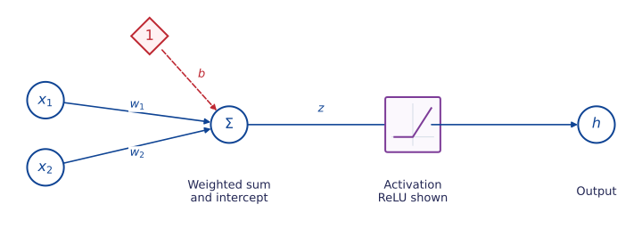
Definition 1 (Artificial neuron) A neuron forms an affine score and applies an activation function:
\[z=w^\top x+b,\qquad h=\sigma(z).\]
\(w\) contains the weights, \(b\) is the intercept, and \(\sigma:\R\to\R\) is the activation.
The diamond contains a fixed 1; its connection weight \(b\) is trainable.
Common activation functions
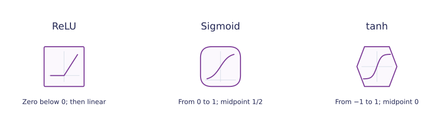
| Activation | Output range | Behaviour |
|---|---|---|
| ReLU | \([0,\infty)\) | Zero on one side; linear on the other |
| Sigmoid | \((0,1)\) | Smooth transition centred at \(1/2\) |
| tanh | \((-1,1)\) | Smooth transition centred at \(0\) |
These shapes are the diagram convention used here; the small curve identifies the activation. Formulae
Activation formulae
\[\begin{aligned} \operatorname{ReLU}(z)&=\max\{0,z\},\\ \operatorname{sigmoid}(z)&=\frac{1}{1+e^{-z}},\\ \tanh(z)&=\frac{e^z-e^{-z}}{e^z+e^{-z}}. \end{aligned}\] ReLU is not differentiable at zero. Sigmoid and tanh flatten in both tails.
Weights and intercepts reshape an activation
- The weight stretches or reverses the graph.
- The intercept moves the transition: for \(w\ne0\), its centre or bend is at \(x=-b/w\).
One hidden layer
Definition 2 (Network with one hidden layer) Each hidden unit forms its own weighted sum and applies an activation. The output combines the hidden values into an affine score.
\[s_\theta(x)=c+\sum_{j=1}^m v_jh_j(x).\]
- Blue connections: input weights \(w_{jk}\).
- Purple connections: output weights \(v_j\).
- Red dashed connections: intercepts \(b_j,c\).
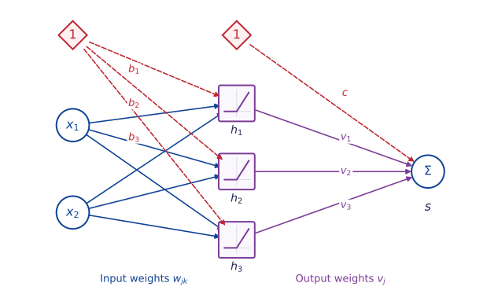
One hidden layer: multivariate responses
A neural network can also predict a multivariate response, \(Y=(Y_1,\ldots,Y_k)^\top\).
- The outputs \(s_1,\ldots,s_k\) use the same hidden features.
- Each output has its own weights \(v_{rj}\) and intercept \(c_r\).
- For regression, \(s_r(x)\) predicts \(\mathbb E[Y_r\mid X=x]\).
Example: predict temperature and humidity together from the same inputs.
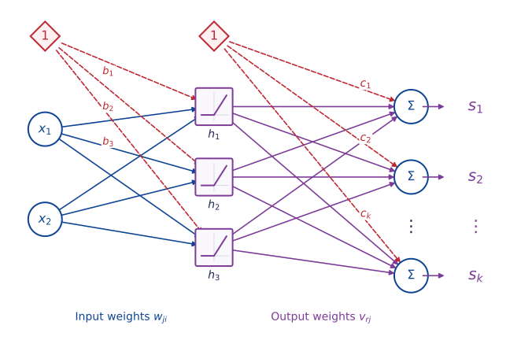
One affine combination per response
For each output \(r=1,\ldots,k\),
\[s_r(x)=c_r+\sum_{j=1}^m v_{rj}h_j(x).\]
Equivalently, \(s(x)=Vh(x)+c\), where \(V\in\R^{k\times m}\) and \(c\in\R^k\). Row \(r\) of \(V\) contains the weights for output \(s_r\).
Matrix notation for a scalar output
Forward propagation
\[h=\sigma(Wx+b),\qquad s_{\theta}(x)=v^\top h+c.\]
| Quantity | Dimension | Meaning |
|---|---|---|
| \(x\) | \(d\times 1\) | Input |
| \(W\) | \(m\times d\) | Row \(j\) is \(w_j^\top\) |
| \(b\), \(h\), \(v\) | \(m\times 1\) | Hidden biases, activations, output weights |
| \(c\), \(s_{\theta}(x)\) | Scalar | Output bias and score |
The activation \(\sigma\) acts coordinate by coordinate on a vector.
Exercise: can parameters be recovered from predictions?
Exercise 1 (Different parameters, the same function) Consider \(s_\theta(x)=c+\sum_{j=1}^m v_j\operatorname{ReLU}(w_j^\top x+b_j)\).
- Show how to permute the hidden units without changing \(s_\theta\).
- For \(a>0\), replace \((w_j,b_j)\) by \((aw_j,ab_j)\). How must \(v_j\) change to preserve the function? Prove the invariance.
- Explain why even knowing \(s_\theta(x)\) for every \(x\) need not determine the parameters. What does this imply when comparing two fitted networks?
A forward pass: active and inactive units
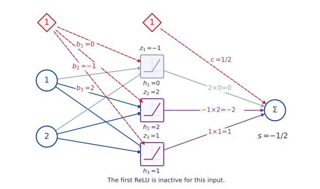
The input is \(x=(1,2)^\top\). The first unit receives a negative score, so its contribution vanishes for this input. Weights and intercepts
Parameters of the illustrated network
\[W=\begin{pmatrix}1&-1\\1&1\\-1&0\end{pmatrix},\quad b=\begin{pmatrix}0\\-1\\2\end{pmatrix}.\]
\[v=\begin{pmatrix}2\\-1\\1\end{pmatrix},\qquad c=\tfrac12.\] The stored forward values are \(z=(-1,2,1)^\top\) and \(h=(0,2,1)^\top\).
A score is not yet a probability
With \(v=(2,-1,1)^\top\) and \(c=\tfrac12\),
\[s_{\theta}(x)=v^\top h+c =2(0)-1(2)+1(1)+\tfrac12=-\tfrac12.\]
- Regression: the predicted conditional mean is \(-\tfrac12\).
- Binary classification: apply a sigmoid to the score:
\[p_{\theta}(x)=\operatorname{sigmoid}(-\tfrac12)\approx 0.378.\]
At probability threshold \(1/2\), the predicted class is 0.
Choose the output for the task
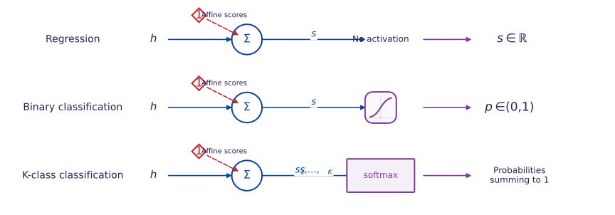
- Regression: model \(\mathbb E[Y\mid X=x]\) with an unrestricted real score.
- Binary classification: transform one score to a probability.
- Several classes: softmax transforms all \(K\) scores together into probabilities summing to one.
Softmax acts on a vector
\[p_{\theta,k}(x)=\frac{e^{s_{\theta,k}(x)}}{\sum_{r=1}^K e^{s_{\theta,r}(x)}}.\] Changing one score affects every probability. Softmax is not a separate scalar activation on each output unit.
More hidden layers: composing representations
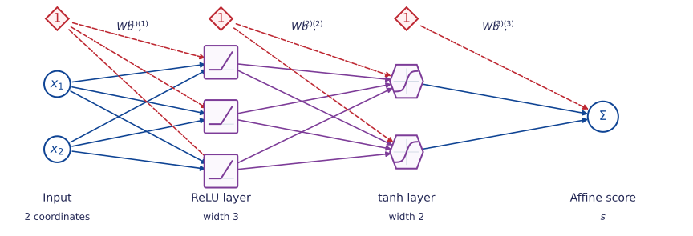
- Width: the number of units in a hidden layer; here, \(3\) and \(2\).
- Depth: two hidden layers in this convention.
- Each layer builds a new representation of the previous layer’s output.
Layer dimensions and forward recursion
With \(h^{(0)}=x\) and \(L\) hidden layers,
for \(\ell=1,\ldots,L\),
\[h^{(\ell)}=\sigma_\ell\!\left(W^{(\ell)}h^{(\ell-1)}+b^{(\ell)}\right).\] \[s_\theta(x)=W^{(L+1)}h^{(L)}+b^{(L+1)}.\]
For widths \(m_\ell\), \(W^{(\ell)}\in\R^{m_\ell\times m_{\ell-1}}\) with \(m_0=d\). The picture has \(L=2\), \(m_1=3\), \(m_2=2\) and one output score.
ReLU units create bends
For a scalar input and one hidden layer,
\[s_{\theta}(x)=c+\sum_{j=1}^{m}v_j\operatorname{ReLU}(w_jx+b_j).\]
- If \(w_j\ne0\), unit \(j\) changes slope at \(x=-b_j/w_j\).
- Between these points, every unit is affine or zero, so the sum is affine.
- The resulting function is continuous and piecewise affine.
- Training can move the bends and change the slopes.
Explore a sum of ReLU units
\[f(x)=\operatorname{ReLU}(x)-2\operatorname{ReLU}(x-t)+\operatorname{ReLU}(x-2).\]
nnReluDemo = {
const container = html`<div style="max-width:1100px;margin:0 auto;font-family:sans-serif;">
<svg viewBox="0 0 1000 355" role="img" aria-label="Three weighted ReLU units and their sum" style="display:block;width:100%;max-height:355px;">
<defs><clipPath id="nn-relu-clip"><rect x="65" y="15" width="875" height="270"/></clipPath></defs>
<rect x="65" y="15" width="875" height="270" fill="#f8fafc"/>
<g class="nn-ticks" fill="#475569" font-size="16"></g>
<g clip-path="url(#nn-relu-clip)">
<path class="nn-unit-0" fill="none" stroke="#0f4494" stroke-width="2" stroke-dasharray="6 5"/>
<path class="nn-unit-1" fill="none" stroke="#be2832" stroke-width="2" stroke-dasharray="6 5"/>
<path class="nn-unit-2" fill="none" stroke="#7d3c98" stroke-width="2" stroke-dasharray="6 5"/>
<path class="nn-sum" fill="none" stroke="#172554" stroke-width="4"/>
</g>
<text x="500" y="342" text-anchor="middle" font-size="20">x</text>
</svg>
<div style="display:flex;justify-content:center;gap:22px;font-size:19px;">
<span style="color:#0f4494">┄ ReLU(x)</span>
<span style="color:#be2832">┄ −2 ReLU(x − t)</span>
<span style="color:#7d3c98">┄ ReLU(x − 2)</span>
<span style="color:#172554">━ Sum</span>
</div>
<label style="display:flex;justify-content:center;align-items:center;gap:18px;margin-top:12px;font-size:23px;">
Middle bend t
<input class="nn-bend" type="range" min="0.25" max="1.75" step="0.05" value="1" aria-label="Middle ReLU bend" style="width:300px;">
<output class="nn-bend-value" style="min-width:55px;"></output>
</label>
</div>`;
const px = x => 65 + (x + 0.5) * 875 / 3;
const py = y => 285 - (y + 5) * 270 / 8;
const ticks = container.querySelector('.nn-ticks');
const svgNS = 'http://www.w3.org/2000/svg';
function element(tag, attrs, label) {
const e = document.createElementNS(svgNS, tag);
for (const [name,value] of Object.entries(attrs)) e.setAttribute(name,value);
if (label !== undefined) e.textContent = label;
ticks.append(e);
}
element('line',{x1:px(-0.5),x2:px(2.5),y1:py(0),y2:py(0),stroke:'#94a3b8'});
element('line',{x1:px(0),x2:px(0),y1:15,y2:285,stroke:'#94a3b8'});
for (const x of [0,1,2]) element('text',{x:px(x),y:310,'text-anchor':'middle'},x);
for (const y of [-4,-2,0,2]) element('text',{x:52,y:py(y)+5,'text-anchor':'end'},y);
const slider = container.querySelector('.nn-bend');
function update() {
const t = slider.valueAsNumber;
const xs = [-0.5,0,t,2,2.5];
const units = [x=>Math.max(0,x),x=>-2*Math.max(0,x-t),x=>Math.max(0,x-2)];
const curve = fn => xs.map((x,i)=>`${i?'L':'M'} ${px(x)} ${py(fn(x))}`).join(' ');
units.forEach((fn,i)=>container.querySelector(`.nn-unit-${i}`).setAttribute('d',curve(fn)));
container.querySelector('.nn-sum').setAttribute('d',curve(x=>units.reduce((sum,fn)=>sum+fn(x),0)));
container.querySelector('.nn-bend-value').textContent = t.toFixed(2);
}
slider.addEventListener('input',update);
update();
return container;
}Exercise: design a triangular response
Exercise 2 (Choose the bends and their weights) The target is zero outside \([0,2]\), with a peak of height \(1\) at \(x=1\).
- Design a one-hidden-layer ReLU network for the graph, using the changes in slope. How would you adapt its weights and intercepts to move the peak to \(x=1/2\), keeping its height and both zero tails?
- Could two hidden ReLU units reproduce all three bends? Explain, allowing arbitrary weights and intercepts.
- Could all output weights be nonnegative, even if some input weights were negative? Explain using slope changes.
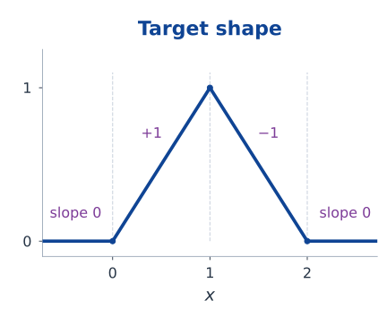
Affine layers alone collapse to one affine map
Proposition 1 (Composition of affine maps) A finite composition of affine maps is affine. Adding hidden layers with identity activations therefore does not introduce nonlinear features.
\[W_2(W_1x+b_1)+b_2 =\underbrace{W_2W_1}_{A}x+\underbrace{(W_2b_1+b_2)}_{a}.\]
Nonlinear hidden activations allow the network to represent functions beyond an affine score.
Exercise: what does an affine bottleneck lose?
Exercise 3 (An affine bottleneck restricts rank) Let \(h=W_1x+b_1\in\R^r\) and \(s=W_2h+b_2\in\R^q\), with \(x\in\R^d\).
- Characterise exactly which affine maps \(x\mapsto Ax+a\) this architecture represents. Give both a necessary condition and a construction proving sufficiency.
- Extend the characterisation to several affine hidden layers of prescribed widths.
- In binary classification, suppose only the final sigmoid is retained. Prove that no choice of widths can classify \((0,0),(1,1)\) as class 1 and \((1,0),(0,1)\) as class 0, at threshold \(1/2\).
2. Loss functions and backpropagation
A prediction needs a criterion
Observe independent pairs \((x_i,y_i)\), \(i=1,\ldots,n\). A network gives a prediction; a loss measures its disagreement with an observation.
Definition 3 (Empirical risk) For a prediction rule \(f_\theta\) and loss \(\ell\), define
\[\widehat R_n(\theta)=\frac1n\sum_{i=1}^n\ell(y_i,f_\theta(x_i)).\]
- Model: the family of functions \(f_\theta\).
- Loss: the criterion used to assess each prediction.
- Optimisation algorithm: the procedure used to adjust \(\theta\).
The same network architecture can be fitted using different losses.
Squared loss from a Gaussian model
Suppose \(Y_i\mid X_i=x_i\sim N(s_\theta(x_i),\tau^2)\), with fixed \(\tau^2>0\).
\[-\log p_\theta(y_i\mid x_i) =\frac{(y_i-s_\theta(x_i))^2}{2\tau^2}+\frac12\log(2\pi\tau^2).\]
Terms constant in \(\theta\) and positive constant factors do not change the minimisers.
Squared loss
\[\ell(y,s)=\frac12(s-y)^2,\qquad \frac{\partial\ell}{\partial s}=s-y.\]
- The factor \(1/2\) simplifies derivatives.
- Squared loss remains useful without a Gaussian assumption.
- For finite conditional second moments, its conditional expected value is minimised by \(\mathbb E[Y\mid X=x]\).
Binary cross-entropy
For \(Y\in\{0,1\}\), write \(p=\operatorname{sigmoid}(s)\) and use a Bernoulli model:
\[p_\theta(y\mid x)=p^y(1-p)^{1-y}.\]
Negative log-likelihood
\[\ell(y,p)=-y\log p-(1-y)\log(1-p).\]
- A confident incorrect prediction receives a large loss.
- With \(y=1\), probabilities \(0.9\) and \(0.1\) give losses approximately \(0.105\) and \(2.303\).
- The conditional expected loss is minimised by the true conditional probability (allowing boundary probabilities).
Example: Poisson regression
Example 1 (Calls per hour) Let \(Y\) count calls received in one hour, with predictors \(x\) such as time and day of the week.
\[Y\mid X=x\sim\operatorname{Poisson}(\lambda_\theta(x)).\]
The parameter \(\lambda_\theta(x)\) is the conditional mean count.
Log link: the score models the log mean
\[\lambda_\theta(x)=\exp(s_\theta(x))>0.\]
- The mean need not be an integer.
- Setting \(\lambda_\theta(x)=s_\theta(x)\) requires a positive constrained score.
- Softplus is another positive output map.
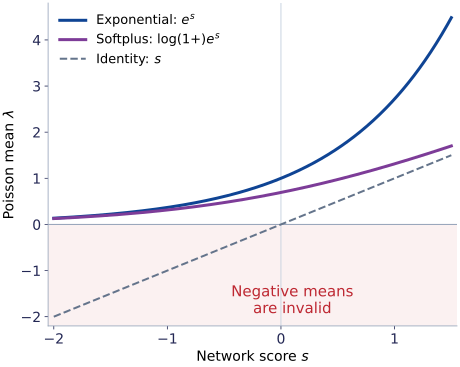
Another positive output map
\[\lambda_\theta(x)=\log\!\left(1+e^{s_\theta(x)}\right)>0.\]
Softplus grows approximately linearly for large positive scores; the exponential grows much faster. Either map gives a positive mean, but the score derivative depends on the chosen map.
Poisson loss with the log link
For the model in Example 1, let \(s=s_\theta(x)\) and \(\lambda=e^s\). The probability of observing \(y\in\{0,1,2,\ldots\}\) is
\[p_\theta(y\mid x)=\frac{e^{-\lambda}\lambda^y}{y!}.\]
Hence \(-\log p_\theta(y\mid x)=\lambda-y\log\lambda+\log(y!)\). The term \(\log(y!)\) does not depend on \(\theta\).
Poisson loss and its score derivative
\[\ell(y,s)=e^s-ys,\qquad \frac{\partial\ell}{\partial s}=e^s-y=\lambda-y.\]
- The output gradient compares the predicted mean with the observed count.
- The Poisson model also assumes \(\operatorname{Var}(Y\mid X=x)=\lambda_\theta(x)\).
- Changing the output map changes the derivative used to start backpropagation.
Exercise: class weights in binary classification
Exercise 4 (Weighted binary cross-entropy) Consider binary classification, with \(Y\in\{0,1\}\). At a fixed input \(x\), let \(p=\Pr(Y=1\mid X=x)\in(0,1)\) be the true class-1 probability and \(q\in(0,1)\) a predicted probability. Give class 1 weight \(\alpha>0\) in the Bernoulli cross-entropy loss:
\[\ell_\alpha(y,q)=-\alpha y\log q-(1-y)\log(1-q).\]
- Find the unique minimiser \(q_\alpha\) of the conditional expected loss. Is it the true probability \(p\)?
- Express the rule \(q_\alpha\geq1/2\) as a threshold on \(p\). Explain how weighting changes the decision rule.
- If a model estimates \(q_\alpha\), how could \(p\) be recovered? State why finite data and a restricted network class limit this interpretation.
Binary cross-entropy: differentiate the score
For binary classification, let \(y\in\{0,1\}\), \(s=s_\theta(x)\) be the network score, and \(p=\operatorname{sigmoid}(s)\) the predicted class-1 probability.
Use the unweighted Bernoulli cross-entropy (\(\alpha=1\)):
\[\ell(y,p)=-y\log p-(1-y)\log(1-p).\]
The chain rule uses
\[\frac{\partial\ell}{\partial p} =\frac{p-y}{p(1-p)},\qquad \frac{\partial p}{\partial s}=p(1-p).\]
Sigmoid and cross-entropy
\[\frac{\partial\ell}{\partial s}=p-y.\]
An equivalent expression computes the loss directly from the score:
\[\ell(y,s)=\log(1+e^s)-ys =\max(s,0)-ys+\log(1+e^{-|s|}).\]
The last form avoids exponentiating large positive scores. Software often calls \(s\) a logit.
Several classes: softmax and cross-entropy
Each observation belongs to exactly one of \(K\) classes: \(Y\in\{1,\ldots,K\}\). At input \(x\), the network produces one real score \(s_k=s_{\theta,k}(x)\) per class.
Definition 4 (Softmax probabilities) \[p_k=\frac{e^{s_k}}{\sum_{r=1}^K e^{s_r}},\qquad k=1,\ldots,K.\]
\(p_k\) is the model’s predicted probability that \(Y=k\) given \(X=x\).
- Exponentiate: obtain positive values.
- Normalise: divide by their shared total, so \(\sum_k p_k=1\).
- All outputs act together: changing one score changes every probability.
- The class with the largest score also has the largest probability.
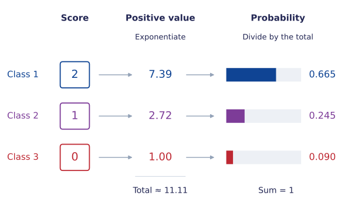
Multiclass cross-entropy: use the observed class
The observed label \(y\) selects one class. Its model probability is \(p_y\), so the categorical negative log-likelihood is
Multiclass cross-entropy
\[\ell(y,s)=-\log p_y =-s_y+\log\!\left(\sum_{r=1}^K e^{s_r}\right).\]
Example: if the observed class in the picture is \(y=2\), use \(p_2\approx0.245\); the loss is approximately \(1.41\). Assigning more probability to the observed class reduces the loss.
Write \(e_y\) for the one-hot target: a one at the observed class and zeros elsewhere. For \(K=3\) and \(y=2\), \(e_y=(0,1,0)^\top\).
Differentiate with respect to the class scores
\[\frac{\partial\ell}{\partial s_k}=p_k-\mathbf1_{\{k=y\}}, \qquad \nabla_s\ell=p-e_y.\]
- For the observed class, the component is \(p_y-1\); for every other class it is \(p_k\).
- Adding the same constant to all scores leaves both probabilities and loss unchanged.
Subtract the largest score
Let \(m=\max_r s_r\). The common factor \(e^{-m}\) cancels, giving
\[p_k=\frac{e^{s_k-m}}{\sum_r e^{s_r-m}}.\]
Every exponential is at most one, and at least one equals one. This avoids overflow from large positive scores. The loss can be evaluated as
\[\ell(y,s)=-(s_y-m)+\log\!\left(\sum_r e^{s_r-m}\right).\]
Exercise: the geometry of softmax
Exercise 5 (Convexity without a finite optimum) For a \(K\)-class classification problem (\(K\geq2\)), let \(p=\operatorname{softmax}(s)\). For one observed class \(y\), use \(\ell(s)=-s_y+\log\sum_{k=1}^K e^{s_k}\).
- Derive \(\nabla_s^2\ell=\operatorname{diag}(p)-pp^\top\). Express \(u^\top\nabla_s^2\ell\,u\) as a variance and identify its null space.
- Explain the link between this null space and the non-identifiability of the score vector. Does the constraint \(\sum_k s_k=0\) make the loss strictly convex on that subspace?
- Does the loss attain a finite minimum, even under that constraint? Give a sequence of scores supporting your conclusion.
A computational graph
For one scalar input, consider \(z=wx+b\), \(h=\operatorname{ReLU}(z)\), \(s=vh+c\) and \(\ell=\tfrac12(s-y)^2\).
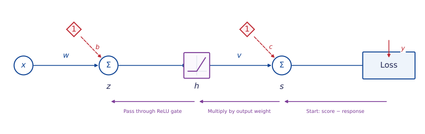
A scalar computational graph showing the forward values and the reverse chain of derivatives.
- Forward: compute and store the intermediate values.
- Backward: propagate the derivative of the loss towards the parameters.
- When a value feeds several branches, add the contributions from those branches.
The chain rule, one local step at a time
Write \(\delta_s=\partial\ell/\partial s\). For squared loss, \(\delta_s=s-y\).
\[\begin{aligned} \frac{\partial\ell}{\partial v}&=\delta_s h, &\frac{\partial\ell}{\partial c}&=\delta_s,\\ \delta_z:=\frac{\partial\ell}{\partial z}&=\delta_s v\,\mathbf1_{\{z>0\}}, &\frac{\partial\ell}{\partial w}&=\delta_z x, &\frac{\partial\ell}{\partial b}&=\delta_z. \end{aligned}\]
- Each step multiplies an incoming derivative by a local derivative.
- For ReLU, the derivative is \(0\) for \(z<0\) and \(1\) for \(z>0\).
- At \(z=0\), ReLU has no derivative; a common computational convention uses \(0\).
Backward propagation follows the connections
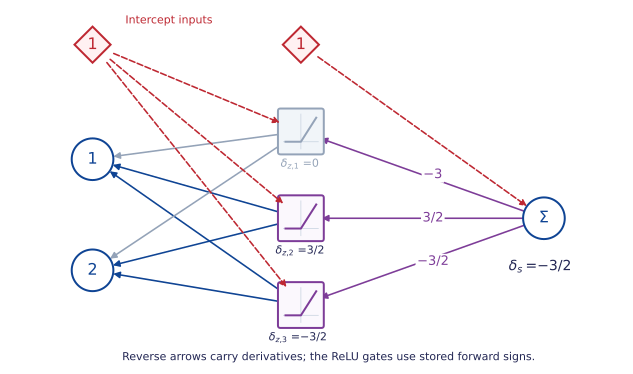
- With \(y=1\) and squared loss, the output derivative is \(s-y=-3/2\).
- Output weights transmit derivatives to hidden units; ReLU then passes or blocks them.
- Each edge gradient combines an arriving derivative with its stored input.
One hidden layer: backward propagation
Let \(z=Wx+b\), \(h=\sigma(z)\) and \(s=v^\top h+c\) for a scalar output.
One observation
\[\begin{aligned} \delta_s&=\frac{\partial\ell}{\partial s}, &\nabla_v\ell&=\delta_s h, &\frac{\partial\ell}{\partial c}&=\delta_s,\\ \delta_z&=(v\delta_s)\odot\sigma'(z), &\nabla_W\ell&=\delta_z x^\top, &\nabla_b\ell&=\delta_z. \end{aligned}\]
- \(\odot\) denotes coordinatewise multiplication.
- \(\delta_z\in\R^m\) and \(\delta_zx^\top\in\R^{m\times d}\).
- The gradient of each parameter array has the same shape as that array.
The forward-pass example, continued
For the earlier input \(x=(1,2)^\top\),
\[z=(-1,2,1)^\top,\quad h=(0,2,1)^\top,\quad v=(2,-1,1)^\top,\quad s=-\tfrac12.\]
Take \(y=1\) and squared loss. Then \(\delta_s=s-y=-\tfrac32\).
\[\nabla_v\ell=\begin{pmatrix}0\\-3\\-3/2\end{pmatrix},\quad \delta_z=\begin{pmatrix}0\\3/2\\-3/2\end{pmatrix},\quad \nabla_W\ell=\begin{pmatrix}0&0\\3/2&3\\-3/2&-3\end{pmatrix}.\]
Also \(\nabla_b\ell=\delta_z\) and \(\partial\ell/\partial c=-3/2\).
The first hidden unit contributes zero parameter gradient for this observation.
Several layers: the backward recursion
Write \(z^{(\ell)}=W^{(\ell)}h^{(\ell-1)}+b^{(\ell)}\) and \(h^{(\ell)}=\sigma_\ell(z^{(\ell)})\), for \(\ell=1,\ldots,L\). The output scores are \(s=W^{(L+1)}h^{(L)}+b^{(L+1)}\).
Start at the output, then move backwards
\[\begin{aligned} \delta^{(L+1)}&=\nabla_s\ell,\\ \delta^{(\ell)}&=\left((W^{(\ell+1)})^\top\delta^{(\ell+1)}\right) \odot\sigma_\ell'(z^{(\ell)}),\qquad \ell=L,\ldots,1. \end{aligned}\]
For \(\ell=1,\ldots,L+1\),
\[\nabla_{W^{(\ell)}}\ell=\delta^{(\ell)}(h^{(\ell-1)})^\top, \qquad \nabla_{b^{(\ell)}}\ell=\delta^{(\ell)}.\]
Each intermediate derivative is reused rather than recomputed for every parameter.
From one observation to a batch
For a batch \(B\) of size \(b\),
\[g_B=\nabla_\theta\left[\frac1b\sum_{i\in B}\ell(y_i,f_\theta(x_i))\right] =\frac1b\sum_{i\in B}\nabla_\theta\ell(y_i,f_\theta(x_i)).\]
- Compute each observation’s forward values and backward contributions.
- Average the contributions; matrix operations evaluate many observations together.
- Add a penalty gradient if the training objective includes regularisation.
For \(J(\theta)=\widehat R_n(\theta)+\frac\lambda2\sum_\ell\|W^{(\ell)}\|_F^2\), the additional gradient for \(W^{(\ell)}\) is \(\lambda W^{(\ell)}\).
Automatic differentiation
Reverse-mode automatic differentiation applies the chain rule to a recorded computation.
- Backpropagation is its application to the network’s loss.
- It uses local derivative rules, rather than symbolic expansion of a huge expression.
- One reverse pass obtains derivatives with respect to all parameters of a scalar loss.
- Stored forward values cost memory; recomputing selected values trades time for memory.
A useful independent check
Away from nondifferentiable points,
\[\frac{\partial J}{\partial\theta_j}\approx \frac{J(\theta+\varepsilon e_j)-J(\theta-\varepsilon e_j)}{2\varepsilon}.\]
Check a small example with several choices of \(\varepsilon\); very small steps amplify rounding error.
Exercise: when gradient checks disagree
Exercise 6 (A differentiable function built from ReLU kinks) Define \(r(\theta)=\operatorname{ReLU}(\theta)-\operatorname{ReLU}(-\theta)\) and \(J(\theta)=\tfrac12(r(\theta)-1)^2\).
- Simplify \(r\) and obtain the mathematical derivative \(J'(0)\).
- Apply the local backpropagation rules to the unsimplified graph, using derivative \(0\) for each ReLU at zero. Explain the discrepancy.
- What does a centred finite-difference check return at zero? Does the discrepancy establish that the implementation is wrong? Explain which hypothesis of the ordinary chain rule fails.
3. Training neural networks
The empirical objective is usually nonconvex
Even a small network can contain products of trainable parameters and changing activation patterns.
- Convexity of the loss in the output score does not imply convexity in all parameters.
- Different initialisations can lead to different fitted functions.
- A small gradient does not certify a global minimum.
Exercise: a redundant parametrisation
Exercise 7 (Parametrisation changes optimisation geometry) Consider \(J(v,w)=\tfrac12(vw-1)^2\).
- Characterise all stationary points and classify them. Explain why exact gradient descent initialised at \((0,0)\) cannot move.
- At a minimiser with \(vw=1\), show that the Hessian has eigenvalues \(0\) and \(v^2+w^2\). Relate the zero eigenvalue to the set of equivalent parameters.
- Compare \((v,w)=(a,a^{-1})\) as \(a>0\) varies. Why can identical predictions require very different stable learning rates? Compare with optimising the single parameter \(u=vw\).
Mini-batch stochastic gradient descent
For a uniformly sampled batch \(B_t\) of \(b\) training indices,
\[g_t=\frac1b\sum_{i\in B_t}\nabla_\theta\ell_i(\theta_t), \qquad \theta_{t+1}=\theta_t-\eta_t g_t.\]
- Batch size: observations used for one update.
- Epoch: one pass through the training data.
- Full-batch gradient descent uses all \(n\) observations for each update.
If the batch is sampled independently of \(\theta_t\) from the full dataset, \(\mathbb E[g_t\mid\theta_t]=\nabla\widehat R_n(\theta_t)\).
Shuffling once per epoch is common; its successive batches are dependent.
Batch size changes the gradient noise
At a fixed \(\theta\), let \(G\) be the gradient from a uniformly sampled training observation. For \(b\) independent samples with replacement,
\[\operatorname{Cov}\!\left(\frac1b\sum_{j=1}^bG_j\right) =\frac1b\operatorname{Cov}(G).\]
- Larger batches reduce sampling noise but require more work per update.
- Smaller batches permit more frequent updates and noisier loss trajectories.
- Hardware efficiency and statistical efficiency need not favour the same batch size.
A training loop
\begin{algorithm} \caption{Mini-batch SGD} \begin{algorithmic} \State Initialise weights randomly and choose biases. \For{each epoch} \State Shuffle the training indices and partition them into batches. \For{each batch} \State Compute predictions and the average loss on the batch. \State Backpropagate to obtain the batch gradient. \State Subtract the learning rate times the gradient from the parameters. \EndFor \State Record training and validation errors without parameter updates. \EndFor \Return The fitted parameters \end{algorithmic} \end{algorithm}
\[\theta\leftarrow\theta-\eta g.\]
The batch loss is an average. Summing it instead changes the effective step size when the batch size changes.
Learning rates
For a quadratic \(J(\theta)=\tfrac12\theta^\top A\theta\), with \(A\) positive definite, gradient descent evolves separately along its eigenvectors:
\[u_{t+1,j}=(1-\eta\lambda_j)u_{t,j}, \qquad 0<\eta<\frac{2}{\lambda_{\max}(A)}.\]
- Too small: slow movement along directions of low curvature.
- Too large: oscillation or divergence along directions of high curvature.
- Networks are not fixed quadratics, but local curvature still affects useful step sizes.
- A decreasing schedule can reduce late-stage fluctuations; it cannot repair an incorrect gradient.
Momentum
Let \(u_0=0\) and \(0\leq\mu<1\):
\[u_{t+1}=\mu u_t+g_t,\qquad \theta_{t+1}=\theta_t-\eta_tu_{t+1}.\]
- Persistent gradient directions accumulate in \(u_t\).
- Alternating contributions can partly cancel.
- Momentum introduces another parameter and can also overshoot.
Some implementations use \((1-\mu)g_t\) in the first equation; the learning-rate scaling then differs.
Adam: adaptive coordinate scales
Starting from \(m_0=v_0=0\), for \(t\geq1\):
\[\begin{aligned} m_t&=\beta_1m_{t-1}+(1-\beta_1)g_t, &v_t&=\beta_2v_{t-1}+(1-\beta_2)(g_t\odot g_t),\\ \widehat m_t&=\frac{m_t}{1-\beta_1^t}, &\widehat v_t&=\frac{v_t}{1-\beta_2^t},\\ \theta_t&=\theta_{t-1}-\eta_t\frac{\widehat m_t}{\sqrt{\widehat v_t}+\epsilon}. \end{aligned}\]
- Here \(g_t\) is evaluated at \(\theta_{t-1}\); all divisions and square roots are coordinatewise.
- \(m_t\) smooths gradients; \(v_t\) estimates their uncentred second moments.
- The denominators \(1-\beta_j^t\) correct the initial zero-state bias.
Source: Kingma and Ba, Adam. It remains necessary to choose a learning rate and monitor training.
Why initialise hidden units differently?
If two hidden units start with identical incoming weights, biases and outgoing weights, they receive identical updates under deterministic gradient descent.
- The symmetry can prevent the units from learning different features.
- Initialise weights randomly; biases can often start at zero.
- Random weights must also have an appropriate scale.
A variance calculation
\[z=\sum_{j=1}^q w_jh_j,\qquad \operatorname{Var}(z)=q\operatorname{Var}(w_j)\mathbb E[h_j^2].\]
This identity assumes independent, centred weights with common variance, independent of the inputs, and common input second moments.
Initialisation and gradient propagation
The backward recursion repeatedly multiplies by weight matrices and activation derivatives.
- Sigmoid derivatives are at most \(1/4\) and approach zero in saturated regions.
- Products of small factors can cause vanishing gradients.
- Large matrix gains can cause exploding gradients.
- A ReLU unit with negative pre-activation on every training input may receive zero data gradient.
Variance scaling for ReLU
For approximately symmetric pre-activations, \(\mathbb E[\operatorname{ReLU}(z)^2]=\tfrac12\mathbb E[z^2]\). This motivates \(\operatorname{Var}(w_j)\approx2/q\) for \(q\) incoming units.
This is an initialisation heuristic based on moment assumptions, not a guarantee that every layer remains well conditioned.
Scale the inputs using training data
For feature \(j\), calculate its training mean \(\bar x_j\) and standard deviation \(s_j\):
\[\widetilde x_j=\frac{x_j-\bar x_j}{s_j}.\]
- Reuse these same values for validation, test and future observations.
- Remove or explicitly handle constant features (\(s_j=0\)).
- Similar input scales can improve the geometry of optimisation.
- For regression, response scaling can also help; transform predictions back to the original units.
A reproducible regression experiment
Generate \(X\sim\operatorname{Unif}[-1,1]\) and
\[Y=\sin(\pi X)+0.3\cos(3\pi X)+\varepsilon,\qquad \varepsilon\sim N(0,0.2^2),\quad \varepsilon\perp X.\]
- Independent training, validation and test sets: \(60\), \(120\) and \(500\) observations.
- One hidden layer with \(32\) tanh units and a scalar affine output.
- Adam, learning rate \(0.01\), batch size \(20\), \(1500\) epochs.
- Training input scaling; fixed random seeds for reproducibility.
The displayed results are computed in advance. The full NumPy implementation is in codes/nn_experiments.py.
Python: the batch gradient
Here rows of \(X\) are observations. The array W stores hidden-unit weights in columns, so its transpose is the mathematical \(W\) used earlier.
Training loss and fitted function
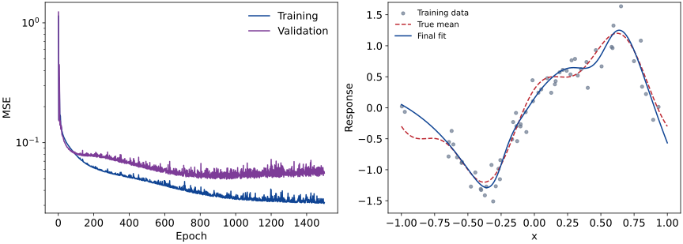
Computed training and validation mean squared errors over epochs, beside the fitted regression curve and training observations.
- The gradient uses half mean squared error; the plotted MSE omits the factor \(1/2\).
- A falling training loss verifies progress on the fitted objective.
- Validation error measures performance on observations excluded from parameter updates.
A curved binary decision boundary
For \(X\sim\operatorname{Unif}([-1,1]^2)\), generate
\[\Pr(Y=1\mid X=x)=\operatorname{sigmoid}(12(\|x\|^2-0.5)).\]
- One hidden layer: 16 tanh units.
- Binary cross-entropy; full-batch Adam, learning rate \(0.02\).
- 300 training and 150 validation observations; 1200 epochs.
- Select the epoch using validation cross-entropy.
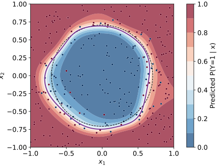
Selected epoch: 592; test accuracy: 90.8% on 500 independent observations.
Exercise: batch size, stability and noise
Exercise 8 (Batch size cannot fix an unstable step) For \(J(\theta)=\tfrac\kappa2\theta^2\), \(\kappa>0\), model a batch gradient by \(g_t=\kappa\theta_t+\xi_t\), where the \(\xi_t\) are independent, centred, independent of \(\theta_0\), and have variance \(\sigma^2/b>0\).
- Under \(\theta_{t+1}=\theta_t-\eta g_t\), derive recursions for the mean and variance. Which step sizes make the mean tend to zero and the variance stay bounded for every deterministic initial value?
- Derive the limiting variance and interpret its dependence on \(b\) and \(\eta\).
- Assess the rule “multiply the learning rate by the batch-size factor”. Can a larger batch repair an unstable step? What changes if the budget is a fixed number of individual gradient evaluations?
4. Regularisation and generalisation
Error on new observations
Let \((X,Y)\) be a fresh observation from the population of interest.
Definition 5 (Population risk) For a prediction rule \(f\), its population risk is
\[R(f)=\mathbb E[\ell(Y,f(X))].\]
- Empirical risk averages over the observed training sample.
- Population risk averages over new observations from the target distribution.
- A network can fit the training sample well and still have large population risk.
The generalisation gap is \(R(f_\theta)-\widehat R_n(\theta)\). It need not be positive for every realised sample.
Training, validation and test sets
| Subset | Use | Examples |
|---|---|---|
| Training | Estimate parameters and preprocessing | Weights, biases, feature means |
| Validation | Choose modelling and training settings | Width, penalty, stopping epoch |
| Test | Evaluate the completed procedure | Final MSE or classification error |
- All three subsets should reflect the intended prediction problem.
- Repeated measurements from one subject should remain in the same subset when predicting for new subjects.
- Forecasting requires respecting time order.
- Repeatedly choosing models from test results turns the test set into a validation set.
Capacity and overfitting
A larger network can use more features to explain the training observations, including their noise.
- Underfitting: restricted features or incomplete optimisation can leave both errors high.
- Overfitting: fitting details of the sample can worsen new-observation error.
- Parameter count alone does not determine generalisation.
- Architecture, data, optimisation and regularisation act together.
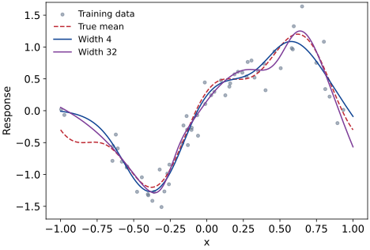
The curves show the last training epoch, without a weight penalty.
Read learning curves carefully
- A persistent training–validation gap suggests that fitting the sample and predicting new observations differ.
- Both losses high: inspect optimisation as well as model capacity.
- Validation loss is noisy; one increase is weak evidence for a trend.
- Compare the same metric on both subsets, with the same inference behaviour.
More data is a separate experiment
A loss-versus-epoch curve varies training time. A loss-versus-sample-size curve varies the amount of training data. They answer different questions.
Penalise large weights
For \(\lambda\geq0\), consider
L2 regularisation
\[J_\lambda(\theta)=\frac1n\sum_{i=1}^n\ell(y_i,f_\theta(x_i)) +\frac\lambda2\sum_{\ell=1}^{L+1}\|W^{(\ell)}\|_F^2.\]
- \(\|W\|_F^2\) is the sum of squared entries of \(W\).
- Biases are unpenalised in this convention.
- The penalty discourages large weights; it does not directly count active neurons.
- Select \(\lambda\) using validation performance.
For ordinary SGD, the weight update is \(W\leftarrow(1-\eta\lambda)W-\eta g_{\mathrm{data}}\).
With adaptive scaling, adding an L2 gradient and applying separate weight decay are generally different operations.
Early stopping
- Evaluate validation error after each epoch.
- Save the parameters whenever validation error improves.
- Stop after a chosen number of epochs without improvement (patience).
- Restore the parameters with the smallest recorded validation error.
\[t_*\in\operatorname*{arg\,min}_{t\in\{1,\ldots,T\}} \widehat R_{\mathrm{val}}(\theta_t).\]
- Training time becomes a model-selection parameter.
- The selected validation error is optimistic because it was minimised over many checkpoints.
- An untouched test set assesses the selected procedure.
Dropout changes the training computation
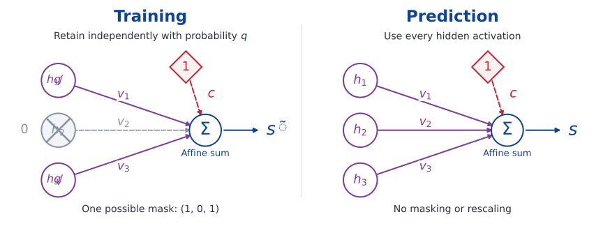
- Training: randomly suppress activations and rescale the retained ones by \(1/q\).
- Prediction: use every activation at its ordinary scale.
- \(q\) is the retention probability; the output intercept remains present in both computations.
Dropout: random hidden-unit masks
During training, let \(M_j\sim\operatorname{Bernoulli}(q)\) independently, where \(q\in(0,1]\) is the retention probability.
\[\widetilde h_j=\frac{M_j}{q}h_j, \qquad \mathbb E[\widetilde h_j\mid h_j]=h_j.\]
- Randomly mask hidden activations during each training evaluation.
- The factor \(1/q\) preserves their conditional mean.
- At prediction time, use the unmasked activations \(h_j\).
- Tune the dropout rate \(1-q\) using validation data.
For a nonlinear downstream map \(g\), generally \(\mathbb E[g(\widetilde h)]\ne g(\mathbb E[\widetilde h])\). The deterministic prediction is not generally the exact average over masked networks.
Exercise: what does dropout penalise?
Exercise 9 (Dropout as a feature-dependent penalty) Fix \(h\in\R^m\), \(y\in\R\) and \(s=c+v^\top h\). Let \(\widetilde s=c+\sum_j v_jM_jh_j/q\), where the \(M_j\) are independent \(\operatorname{Bernoulli}(q)\) variables, \(0<q\leq1\).
Prove the identity
\[\mathbb E_M\!\left[\tfrac12(\widetilde s-y)^2\right] =\tfrac12(s-y)^2+\frac{1-q}{2q}\sum_j v_j^2h_j^2.\]
Average over training observations with fixed hidden features. When does the additional term become an ordinary L2 penalty on \(v\)?
If the hidden features are also learned, is this still a fixed ridge penalty on the output weights? Explain what changes.
Compare models using validation data
The regression experiment compares widths \(4\) and \(32\), with \(\lambda=0\) or \(0.01\). Each candidate contributes its best validation checkpoint.
| Width | L2 penalty | Selected epoch | Training MSE | Validation MSE |
|---|---|---|---|---|
| 4 | 0 | 1500 | 0.0419 | 0.0582 |
| 4 | 0.01 | 697 | 0.0937 | 0.0990 |
| 32 | 0 | 949 | 0.0366 | 0.0496 |
| 32 | 0.01 | 1063 | 0.0957 | 0.0857 |
Selected: width 32, \(\lambda=0\); test MSE: 0.0503.
The noise variance is \(0.04\); finite-sample test MSE can lie above or below this value.
- Select the candidate with the smallest validation MSE.
- Evaluate only that selected candidate on the test set.
- Different samples and initialisations can change the ranking.
The selected checkpoint
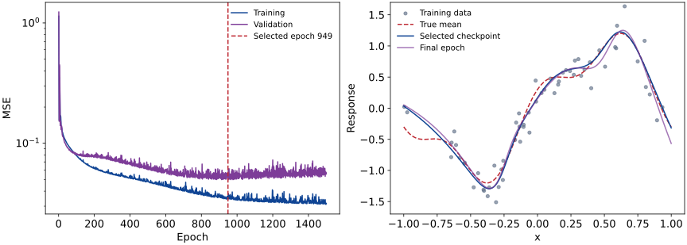
The selected regression network, compared with its final-epoch fit, and their training and validation curves.
Exercise: selection changes the reported error
Exercise 10 (The cost of selecting a checkpoint) Condition on a training run producing \(T\) fixed checkpoints, each with the same population risk \(r\). On an independent validation set, their errors are \(\widehat R_t=r+\varepsilon_t\), with \(\mathbb E[\varepsilon_t]=0\).
- Prove that \(\mathbb E[\min_t\widehat R_t]\leq r\). Give a simple example with strict inequality. Must the errors be independent?
- A researcher doubles the number of inspected checkpoints and obtains a smaller validation minimum. Does this establish improved prediction?
- Let \(t_*\) be selected by validation error. Explain why evaluation on an independent test set estimates \(R(f_{t_*})\) without this selection bias.
Exercise: prediction for new people
Exercise 11 (The split defines the prediction problem) Suppose \(Y_{ij}=A_i+\varepsilon_{ij}\) for person \(i\) and measurement \(j\). All person effects and errors are independent and centred, with variances \(\sigma_A^2\) and \(\tau^2\). Only person identity is available as a predictor.
- For a person with \(m\) training measurements, predict a fresh measurement by their training mean. Derive its mean squared prediction error.
- For a new person with no measurements, derive the minimum MSE of a constant prediction. When can a random split of rows give a misleading impression of performance on new people?
- Design a splitting and model-selection procedure for the new-person target, including preprocessing, stopping epochs and final assessment.
5. Expressiveness and limitations
A ReLU unit changes a slope
For a scalar input, \(\operatorname{ReLU}(x-t)\) is zero below \(t\) and has slope one above \(t\).
\[g(x)=a+bx+\sum_{j=1}^m c_j\operatorname{ReLU}(x-t_j).\]
For ordered knots \(t_1<\cdots<t_m\):
- \(b\) is the slope before the first knot.
- \(c_j\) is the change in slope at \(t_j\).
- \(a\) fixes the vertical position.
The affine term can also be represented by ReLU units because \(x=\operatorname{ReLU}(x)-\operatorname{ReLU}(-x)\).
Represent a linear interpolant
Let \(a=t_0<t_1<\cdots<t_N=b\), with prescribed values \(f(t_j)\). Define the interval slopes
\[d_j=\frac{f(t_{j+1})-f(t_j)}{t_{j+1}-t_j},\qquad j=0,\ldots,N-1.\]
Proposition 2 (Linear interpolation with ReLU) The continuous linear interpolant on \([a,b]\) is
\[g(x)=f(a)+d_0(x-a) +\sum_{j=1}^{N-1}(d_j-d_{j-1})\operatorname{ReLU}(x-t_j).\]
On each interval, the slope changes telescope to the required \(d_j\). Thus a one-hidden-layer ReLU network can represent this interpolant exactly.
More knots, smaller approximation error
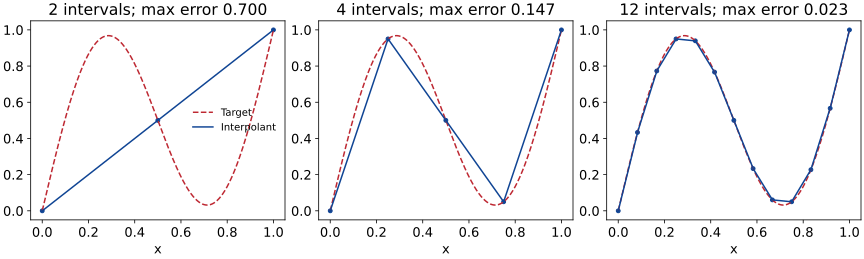
Linear interpolation of a smooth function on progressively finer grids, with the corresponding maximum errors.
Exercise: shape-constrained regression
Exercise 12 (Encode shape constraints in a network) For distinct ordered knots \(t_1<\cdots<t_m\), consider
\[g(x)=a+bx+\sum_{j=1}^m c_j\operatorname{ReLU}(x-t_j).\]
Use this graphical criterion: a continuous piecewise-affine function is convex exactly when its slopes never decrease from left to right.
- Find necessary and sufficient restrictions on \(c_1,\ldots,c_m\) for \(g\) to be convex.
- Find necessary and sufficient inequalities on \(b,c_1,\ldots,c_m\) for \(g\) to be nondecreasing. Is convexity enough?
- A convex function has nondecreasing consecutive secant slopes. Explain why its linear interpolant is convex. Would interpolating noisy observations preserve this property? How could fitting enforce it?
An interpolation error bound
Suppose the target satisfies the Lipschitz condition from Unit 1:
\[|f(x)-f(y)|\leq L|x-y|,\qquad x,y\in[a,b].\]
The output changes by at most \(L\) times the change in input.
Proposition 3 (Grid spacing controls interpolation error) If every grid interval has length at most \(h\), the linear interpolant satisfies
\[|f(x)-g(x)|\leq\frac{Lh}{2}\qquad\text{for every }x\in[a,b].\]
For a known \(L>0\), choosing \(h\leq2\varepsilon/L\) ensures error at most \(\varepsilon\) everywhere on the interval.
The bound on one interval
For \(x=(1-u)t_j+ut_{j+1}\), with \(0\leq u\leq1\), the interpolant is \(g(x)=(1-u)f(t_j)+uf(t_{j+1})\). Write \(\ell=t_{j+1}-t_j\leq h\). Then
\[\begin{aligned} |f(x)-g(x)| &\leq(1-u)|f(x)-f(t_j)|+u|f(x)-f(t_{j+1})|\\ &\leq(1-u)Lu\ell+uL(1-u)\ell\\ &=2Lu(1-u)\ell\leq Lh/2. \end{aligned}\]
The last step uses \(u(1-u)\leq1/4\).
Universal approximation on a bounded input box
Theorem 1 (Universal approximation by ReLU networks) Let \(K=[a_1,b_1]\times\cdots\times[a_d,b_d]\) be a closed, bounded input box, and let \(f:K\to\R\) be continuous. For every \(\varepsilon>0\), there exist a finite \(m\) and parameters such that
\[g(x)=c+\sum_{j=1}^m v_j\operatorname{ReLU}(w_j^\top x+b_j)\]
satisfies
\[|f(x)-g(x)|<\varepsilon\qquad\text{for every }x\in K.\]
This is a special case of the nonpolynomial-activation result of Leshno, Lin, Pinkus and Schocken (1993).
The one-dimensional interpolation argument gives a constructive illustration; it is not a proof of the full multidimensional result.
Read the quantifiers
- For each target \(f\) and tolerance \(\varepsilon\): a suitable network exists.
- Finite width: the required width may increase as the desired error decreases.
- On \(K\): the error bound holds at every input in the chosen box; it gives no guarantee outside it.
- Existence: no training algorithm or sample size is specified.
Exercise: average error and a sharp threshold
Exercise 13 (Approximation depends on the error metric) Let \(X\sim\operatorname{Unif}[-1,1]\) and \(f(x)=\mathbf1_{\{x\geq0\}}\). The ramp \(g_\delta\) agrees with \(f\) outside \([-\delta,\delta]\), where \(0<\delta<1\).
- Construct the pictured ramp using two ReLU units. Specify the weights and intercepts.
- Find \(\mathbb E|f(X)-g_\delta(X)|\) using the shaded triangles. Does small average error guarantee small error at every input? Consider \(x=0\).
- How do the transition slope and your weights change when \(\delta\) is halved? Does Theorem 1 apply to this target \(f\)?
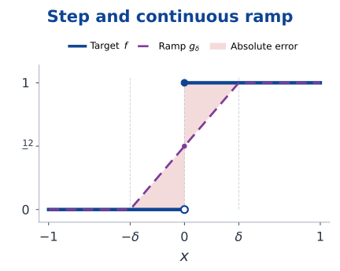
Depth can reuse a simple transformation
On \([0,1]\), define the tent map
\[T(x)=2\operatorname{ReLU}(x)-4\operatorname{ReLU}(x-1/2) +2\operatorname{ReLU}(x-1).\]
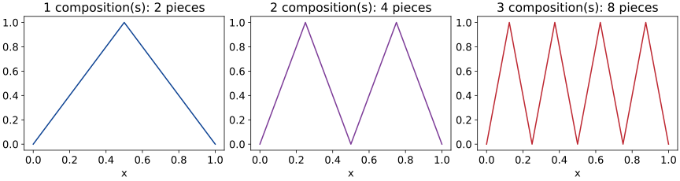
The tent map and its second and third compositions, with successively more linear pieces.
- \(T^{\circ L}\) has \(2^L\) affine pieces on \([0,1]\).
- Composition reuses the same small construction across \(L\) hidden layers.
- A scalar-input network with one hidden layer and \(m\) ReLU units has at most \(m+1\) affine pieces.
Expressiveness has costs
- More width or depth can increase the available representations.
- Greater depth can make gradient propagation and optimisation harder.
- A large function class can fit more sample noise.
- Approximation rates in several dimensions depend on regularity and structure.
For a uniform grid with \(N\) intervals in each of \(d\) coordinates, there are \((N+1)^d\) grid points. An elementary grid construction can therefore become expensive as \(d\) increases.
Structure matters: compositional targets can favour compositional architectures.
Approximation, estimation and optimisation
Use squared loss \(\ell(y,f(x))=\tfrac12(y-f(x))^2\), assume \(\mathbb E[Y^2]<\infty\), and let \(f_*(x)=\mathbb E[Y\mid X=x]\).
\[R(f)-R(f_*)=\frac12\mathbb E[(f(X)-f_*(X))^2].\]
For a fixed candidate class \(\mathcal F\):
- Approximation: how close can functions in \(\mathcal F\) get to \(f_*\)?
- Estimation: how accurately does the sample describe risks within \(\mathcal F\)?
- Optimisation: how closely does training minimise the empirical objective?
Even an exact representation of \(f_*\) does not remove the irreducible noise \(R(f_*)\).
A bound separating the three difficulties
Suppose \(\widetilde f\in\mathcal F\) satisfies \(\widehat R_n(\widetilde f)\leq\inf_{f\in\mathcal F}\widehat R_n(f)+\epsilon_{\rm opt}\). Define
\[\Delta_n=\sup_{f\in\mathcal F}|R(f)-\widehat R_n(f)|.\]
Here \(\inf\) describes the best risk level, possibly approached without being attained; \(\Delta_n\) is the smallest common upper bound on all these discrepancies, and may be infinite.
Proposition 4 (An excess-risk bound) When the relevant risks and \(\Delta_n\) are finite,
\[R(\widetilde f)-R(f_*) \leq\underbrace{\inf_{f\in\mathcal F}R(f)-R(f_*)}_{\text{approximation}} +\underbrace{2\Delta_n}_{\text{estimation control}} +\underbrace{\epsilon_{\rm opt}}_{\text{optimisation}}.\]
An unrestricted network class with unbounded squared loss need not have a useful finite \(\Delta_n\). Controlling the class and tails is part of a statistical argument.
Proof of the excess-risk bound
Compare with an arbitrary candidate
For any \(f\in\mathcal F\),
\[\begin{aligned} R(\widetilde f) &\leq\widehat R_n(\widetilde f)+\Delta_n\\ &\leq\inf_{g\in\mathcal F}\widehat R_n(g)+\epsilon_{\rm opt}+\Delta_n\\ &\leq\widehat R_n(f)+\epsilon_{\rm opt}+\Delta_n\\ &\leq R(f)+\epsilon_{\rm opt}+2\Delta_n. \end{aligned}\]
Take the infimum over \(f\in\mathcal F\), then subtract \(R(f_*)\). The argument does not require the infimum to be attained.
Exercise: fitting every observation is not enough
Exercise 14 (Training loss cannot resolve an unobserved input) Let \(Y=0\) and \(X\in\{0,1,2\}\), with
\[\Pr(X=1)=p,\qquad\Pr(X=0)=\Pr(X=2)=\frac{1-p}{2},\qquad 0<p<1.\]
The realised training sample contains only inputs \(0\) and \(2\). Let \(T\) be the triangular network from Exercise 2 and \(f_H=HT\), for \(H>0\). Use loss \(\ell(y,s)=\tfrac12(s-y)^2\).
- Explain why the zero network and every \(f_H\) minimise training loss. Can training loss distinguish them?
- Compare their population risks. How large can the difference be as \(H\) varies, even for small \(p\)?
- Could better optimisation resolve this ambiguity? Suggest a parameter restriction or penalty that discourages large \(H\). What would validation report if it also missed \(X=1\)?
6. Convolutional neural networks (optional)
Images have spatial structure
A \(28\times28\) greyscale image has \(784\) pixel values. A fully connected layer with \(128\) hidden units has
\[784\times128+128=100\,480\quad\text{parameters}.\]
- Flattening preserves the pixel values but does not explicitly encode neighbourhoods.
- Local patterns can occur at many positions in an image.
- A convolutional layer applies the same local rule at different positions.
An architectural assumption
Nearby pixels and repeated local patterns are useful for prediction. The architecture builds this assumption into its connections and shared weights.
A filter acting on a small patch
Consider an input array and a \(2\times2\) filter:
\[X=\begin{pmatrix}1&2&0\\0&1&3\\2&1&0\end{pmatrix},\qquad K=\begin{pmatrix}1&0\\0&-1\end{pmatrix}.\]
With unit stride, no padding and zero bias,
\[Z=\begin{pmatrix} 1-1&2-3\\0-1&1-0 \end{pmatrix} =\begin{pmatrix}0&-1\\-1&1\end{pmatrix}.\]
The same four filter weights are used at every output position. An activation such as ReLU can then be applied to \(Z\).
Move the filter
nnConvolutionDemo = {
const root = html`<div style="max-width:1000px;margin:auto;font-family:sans-serif">
<svg viewBox="0 0 1000 320" role="img" aria-label="A two by two filter sliding over a three by three input" style="width:100%;max-height:320px"></svg>
<label style="display:flex;justify-content:center;gap:20px;align-items:center">Filter position
<input type="range" min="0" max="3" step="1" value="0" aria-label="Filter position" style="width:300px">
</label>
<p class="calculation" aria-live="polite" style="text-align:center;font-size:25px;color:#7d3c98"></p>
</div>`;
const svg = root.querySelector('svg');
const X = [[1,2,0],[0,1,3],[2,1,0]], K = [[1,0],[0,-1]];
const Z = [[0,-1],[-1,1]];
function add(tag,attrs,label) {
const e=document.createElementNS('http://www.w3.org/2000/svg',tag);
for(const [k,v] of Object.entries(attrs)) e.setAttribute(k,v);
if(label!==undefined)e.textContent=label;
svg.append(e);return e;
}
function draw() {
svg.replaceChildren();
const p=+root.querySelector('input').value, row=Math.floor(p/2),col=p%2;
function matrix(A,left,title,highlight) {
add('text',{x:left+80,y:30,'text-anchor':'middle','font-size':23,fill:'#0f4494'},title);
A.forEach((r,i)=>r.forEach((v,j)=>{
const active=highlight(i,j);
add('rect',{x:left+j*70,y:55+i*70,width:68,height:68,fill:active?'#eaddf0':'#f1f5f9',stroke:active?'#7d3c98':'#cbd5e1'});
add('text',{x:left+j*70+34,y:99+i*70,'text-anchor':'middle','font-size':25,fill:'#232754'},v);
}));
}
matrix(X,50,'Input',(i,j)=>i>=row&&i<row+2&&j>=col&&j<col+2);
matrix(K,420,'Filter',()=>true);
matrix(Z,760,'Output',(i,j)=>i===row&&j===col);
add('text',{x:335,y:145,'font-size':36,fill:'#0f4494'},'×');
add('text',{x:650,y:145,'font-size':36,fill:'#0f4494'},'→');
root.querySelector('.calculation').textContent=
`${X[row][col]} × 1 + ${X[row][col+1]} × 0 + ${X[row+1][col]} × 0 + ${X[row+1][col+1]} × (−1) = ${Z[row][col]}`;
}
root.querySelector('input').addEventListener('input',draw);
draw();return root;
}The highlighted patch determines one output entry. Moving the patch changes the input values, while the filter weights remain fixed.
A convolutional layer with several channels
Let the input have \(C_{\rm in}\) channels and use \(C_{\rm out}\) filters of size \(k_h\times k_w\). For unit stride and no padding, using zero-based spatial indices,
\[z_{i,j,o}=b_o+ \sum_{c=1}^{C_{\rm in}}\sum_{u=0}^{k_h-1}\sum_{v=0}^{k_w-1} K_{u,v,c,o}\,x_{i+u,j+v,c}.\]
- Each output channel has its own filter and bias.
- A filter spans all input channels.
- Weights are shared across spatial positions, not across output channels.
- This unflipped operation is technically cross-correlation, conventionally called convolution in neural networks.
Count the parameters
Convolutional parameters
\[\#\text{parameters}=C_{\rm out}(k_hk_wC_{\rm in}+1).\]
For a \(3\times3\) filter bank with one input channel and eight output channels:
\[8(3\times3\times1+1)=80.\]
- This count does not depend on image height or width.
- A larger image still requires more arithmetic and activation storage.
- Each bias is shared across all positions of its output channel.
Padding and stride
- Padding \(p\): add \(p\) rows or columns on each side, often filled with zeros.
- Stride \(s\): move the filter \(s\) positions between evaluations.
- Assume no dilation and enough padded input for at least one filter placement.
Output height and width
\[H_{\rm out}=\left\lfloor\frac{H+2p_h-k_h}{s_h}\right\rfloor+1, \qquad W_{\rm out}=\left\lfloor\frac{W+2p_w-k_w}{s_w}\right\rfloor+1.\]
For \(H=W=28\), \(k_h=k_w=3\), padding \(1\) and stride \(1\), the output remains \(28\times28\). With stride \(2\), it becomes \(14\times14\).
Receptive fields grow through layers
A unit’s receptive field is the set of input positions that can affect it.
- One \(3\times3\) convolution with stride one sees a \(3\times3\) patch.
- Two such layers see a \(5\times5\) patch.
- Three see a \(7\times7\) patch, away from boundaries.
For one spatial dimension, let \(r_0=j_0=1\). With kernel size \(k_\ell\), stride \(s_\ell\) and no dilation,
\[r_\ell=r_{\ell-1}+(k_\ell-1)j_{\ell-1}, \qquad j_\ell=j_{\ell-1}s_\ell.\]
\(j_\ell\) is the distance in original-input coordinates between neighbouring layer-\(\ell\) positions.
Pooling summarises a neighbourhood
A \(2\times2\) max-pooling layer with stride \(2\) maps
\[\begin{pmatrix}1&4&2&0\\3&2&1&5\\0&1&7&2\\2&3&4&1\end{pmatrix} \quad\longmapsto\quad \begin{pmatrix}4&5\\3&7\end{pmatrix}.\]
- Operates independently in each channel.
- Reduces spatial resolution and has no trainable weights.
- Average pooling uses the neighbourhood mean instead.
- Pooling discards information; small shifts can still change its output.
During backpropagation, max pooling routes a derivative to a selected maximising input; ties require a convention.
A small image classifier
For a greyscale \(28\times28\) image and ten classes:
| Layer | Output shape | Parameters |
|---|---|---|
| Input | \(28\times28\times1\) | \(0\) |
| \(3\times3\) convolution, 8 channels, padding 1; ReLU | \(28\times28\times8\) | \(80\) |
| \(2\times2\) max pooling, stride 2 | \(14\times14\times8\) | \(0\) |
| \(3\times3\) convolution, 16 channels, padding 1; ReLU | \(14\times14\times16\) | \(1168\) |
| \(2\times2\) max pooling, stride 2 | \(7\times7\times16\) | \(0\) |
| Flatten | \(784\) | \(0\) |
| Affine scores for 10 classes | \(10\) | \(7850\) |
Total: \(9098\) parameters. Fit the scores with softmax cross-entropy. The final affine layer contains most of the parameters.
Shared weights also share gradient contributions
For a filter coefficient, using the same unit-stride convention,
\[\frac{\partial\ell}{\partial K_{u,v,c,o}} =\sum_{i,j}\frac{\partial\ell}{\partial z_{i,j,o}}\,x_{i+u,j+v,c}.\]
- One coefficient affects many spatial outputs.
- The chain rule adds contributions from all those uses.
- Average over observations when the loss is a batch average.
- The same optimisers used for fully connected networks apply to these gradients.
A small convolutional experiment
Generate noisy \(8\times8\) images containing a horizontal or vertical band at a random interior position.
- 200 training, 100 validation and 200 independent test images; noise standard deviation \(0.3\).
- Four learned \(3\times3\) filters, no padding, stride one; ReLU.
- Average each feature map over space; combine the four averages into one affine score.
- Binary cross-entropy; full-batch Adam at \(0.02\) for 250 epochs; select by validation loss.
\[\#\text{parameters}=4(3\times3+1)+(4+1)=45.\]
Both the filters and the output layer are trained. The executable NumPy example is in codes/nn_classification.py.
Predictions on synthetic images
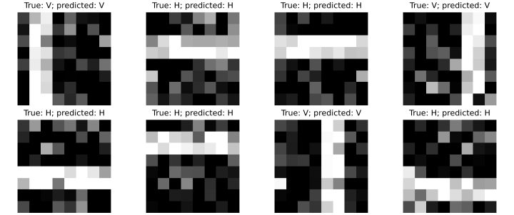
Eight held-out noisy band images, each labelled with its true and predicted orientation.
Selected epoch: 250; test accuracy: 100.0% (200/200). This synthetic task is deliberately simple.
H: horizontal; V: vertical. Success on this task does not establish performance on natural images.
Equivariance is not invariance
- Translation equivariance: translating the input translates the feature map.
- Translation invariance: translating the input leaves the prediction unchanged.
On an infinite grid, a unit-stride convolution commutes with integer translations. Finite boundaries and padding complicate this statement; striding restricts the compatible shifts.
Global spatial averaging can reduce sensitivity to position, but can also remove information needed for localisation.
Choose structure to match the task
The location of a digit may be irrelevant for recognising it. The location of an abnormal region may be essential for finding it.
Exercise: symmetry can rule out the target
Exercise 15 (What translation invariance makes impossible) On a circular signal of even length \(n\), define \((Sx)_i=x_{i-1}\) and \((Cx)_i=b+\sum_{u=0}^{k-1}K_u x_{i+u}\), with indices taken modulo \(n\).
- Prove that \(C(Sx)=S(Cx)\) and that coordinatewise ReLU preserves this property.
- Show that globally averaging these features makes any subsequent classifier invariant to \(S\). Can it distinguish two translated copies whose labels depend on their locations?
- Insert stride-two sampling before global averaging. Construct a counterexample to invariance under a one-position shift, even with circular boundaries.
Further reading
References
- Christopher M. Bishop and Hugh Bishop, Deep Learning: Foundations and Concepts: neural-network models, learning and regularisation.
- Aston Zhang, Zachary C. Lipton, Mu Li and Alexander J. Smola, Dive into Deep Learning: Chapters 5 (multilayer perceptrons), 7 (convolutional networks) and 12 (optimisation).
- Diederik P. Kingma and Jimmy Ba, Adam: A Method for Stochastic Optimization: adaptive moment updates.
- Moshe Leshno, Vladimir Ya. Lin, Allan Pinkus and Shimon Schocken, Multilayer Feedforward Networks with a Nonpolynomial Activation Function Can Approximate Any Function: the general approximation theorem.
Exercise list
Exercises
- Exercise 1: Different parameters, the same function
- Exercise 2: Choose the bends and their weights
- Exercise 3: An affine bottleneck restricts rank
- Exercise 4: Weighted binary cross-entropy
- Exercise 5: Convexity without a finite optimum
- Exercise 6: A differentiable function built from ReLU kinks
- Exercise 7: Parametrisation changes optimisation geometry
- Exercise 8: Batch size cannot fix an unstable step
- Exercise 9: Dropout as a feature-dependent penalty
- Exercise 10: The cost of selecting a checkpoint
- Exercise 11: The split defines the prediction problem
- Exercise 12: Encode shape constraints in a network
- Exercise 13: Approximation depends on the error metric
- Exercise 14: Training loss cannot resolve an unobserved input
- Exercise 15: What translation invariance makes impossible
Nicolás RiveraUnit 2: Neural Networks